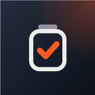

Denetimi şubede bitirin. Rapor kapıda hazır.
Denetim Cebi, kargo şubelerini denetleyenler için bir telefon uygulaması. Kontrol listesini işaretleyin, uygunsuzluğu fotoğraflayın, kasayı sayın. Bitir'e bastığınızda rapor metni, PDF ve Excel hazır olur. Kayıtlar telefonda kalır.
- Hesap ve kurulum yok
- İnternet olmadan çalışır
- Veriler telefonda kalır
- Örnek şubeler
- Denetimi başlat
- Kontrol listesi
- Fotoğraf ve not
- Kasa sayımı
- Rapor ve imza
Bu çerçevedeki uygulama gerçektir; şubeler ve denetimler örnektir. Tanıtım kayıtları ayrı tutulur, kendi denetimlerinize karışmaz.
Kâğıt form, WhatsApp'ta fotoğraf, akşam Excel'i. Denetim üç kez yazılıyor.
Denetçi şubede formu doldurur, fotoğrafları telefondan bir yere atar, ofise dönünce hepsini bilgisayarda yeniden yazar. Bulguların takibi de bir sonraki ziyarete kalır. Denetim Cebi bu işi tek bir yerde, şubedeyken bitirir.
Bir elde telefon, öbür elde hiçbir şey.
Bütün ekranlar uygulamanın kendisinden, örnek veriyle alındı. Büyütmek için dokunun.
38 maddelik şube listesi, dokunarak ilerler.
Üç hazır denetim türü gelir: şube, aktarma merkezi, araç ve kurye. Her türün kendi listesi ve bilgi alanları var: personel sayısı, plaka, kilometre gibi.
- Maddeler kritik, önemli, düşük olarak ağırlıklıdır; puan siz işaretledikçe değişir.
- Sorunsuz başlıklar “Kalanı uygun” ile tek dokunuşta geçilir.
- Önceki denetimde uygunsuz çıkan maddeler turuncu işaretli gelir.
- Liste kendi Excel'inizden yüklenebilir (Kategori, Madde, Önem sütunları).
Fotoğrafı çekin, notu söyleyin, termin kendiliğinden gelsin.
“Uygun değil”e dokunduğunuzda madde açılır. Fotoğraf doğrudan o maddeye eklenir; köşesine tarih, saat ve şube adı basılır. Gerekirse üzerine kırmızı kalemle işaret konur.
- Not mikrofona söylenerek yazılır (destekleyen telefonlarda) ya da hazır notlardan seçilir.
- Uygulama sizin önceki notlarınızdan öğrenir, sık yazdıklarınızı öne çıkarır.
- Termin önem derecesine göre gelir: kritik 3, önemli 7, düşük 15 gün. İsterseniz değiştirirsiniz.
Kupürleri sayın, farkı uygulama bulsun.
Her banknottan kaç adet olduğunu yazarsınız; toplam o anda çıkar. Sistemde görünen tutarı girince fark hesaplanır.
- Fark varsa “Gün sonu kasa sayımı” maddesine kendiliğinden işlenir, rapora tutarıyla girer.
- Bozuk para ve not alanı ayrı; Excel dosyasında kendi sayfası var.
Depodan rastgele gönderi seçin, barkodu okutun.
Barkod, destekleyen telefonlarda (Android'de Chrome) kamerayla okunur; diğerlerinde numara yazılır. Sorunlu gönderinin durumu tek seçimle değişir.
- Durumlar: uygun, yanlış statü, hasarlı ve diğerleri; her birine not eklenir.
- Aynı gönderi iki kez eklenmez; okutma saati kaydedilir.
- Sonuç rapora tek cümle olarak girer: kaç gönderi, kaçında sorun.
Şube sorumlusu ekrana imza atar.
Denetim bitince şube sorumlusu parmağıyla imzalar; imza PDF'te adıyla birlikte görünür. Denetçinin imzası bir kez kaydedilir, sonraki raporlara kendiliğinden eklenir.
- Denetimin başı ve sonu saatle kaydedilir; isterseniz konum da.
- Bulgular şubeye tek dokunuşla WhatsApp mesajı olarak gönderilir.
Rapor yazılmış olarak gelir. PDF'i ve Excel'i de.
Uygulama işaretlediğiniz maddelerden, notlarınızdan, kasa ve gönderi sonucundan resmî dilde bir rapor metni yazar. Puanı önceki denetimle karşılaştırır, en zayıf başlığı söyler. Metni dilediğiniz gibi düzeltebilirsiniz; PDF ve Excel düzeltilmiş hâli kullanır.
Rapor metni
Kural tabanlı yazılır; yapay zekâ ya da internet gerekmez.
PDF rapor
Puan, şube bilgileri, rapor metni, başlık puanları, bulgu listesi, kasa ve gönderi sonucu, fotoğraflar ve imzalar. Telefonun yazdırma ekranından PDF olarak kaydedilir.
Excel dosyası
Denetim formu, bulgular, başlık puanları, kasa sayımı, gönderi kontrolü ve rapor metni ayrı sayfalarda. Filtreli, sütunları ayarlı.
| No | Kategori | Bulgu | Önem | Termin | Durum |
|---|---|---|---|---|---|
| 1 | İş Güvenliği | Acil çıkışlar açık, işaretli ve önü kapalı değil | Kritik | 12.11.2026 | Açık |
| 2 | Kasa ve Tahsilat | Gün sonu kasa sayımı sistemle uyumlu | Kritik | 12.11.2026 | Açık |
Bulgu kapanana kadar, şube unutulmaz.
Denetim bitince iş bitmiyor: termini yaklaşan bulgular, sıradaki şubeler, haftalık ve aylık rapor. Hepsi aynı uygulamada.
Her bulgu bir termin tarihiyle takipte.
Termini geçen, yaklaşan, kapanan bulgular ayrı ayrı görünür; arama ve filtre var. Şubeye hatırlatma WhatsApp'tan tek dokunuşla gider. Sonraki denetimde uygun çıkan bulgu kendiliğinden kapanır.
Hangi şube iyiye, hangisi kötüye gidiyor?
Her şubenin puan gidişatı, son puanı, değişimi ve açık bulgu sayısı tek tabloda. Denetim sıklığına göre sıradaki şubeler önerilir.
Yöneticiye gidecek özet hazır.
Hafta ya da ay seçin: faaliyet metni, şube sıralaması, en sık bulgular ve Excel dosyası hazırlanır.
Sahada telefon, ofiste bilgisayar.
Aynı uygulama bilgisayarda geniş ekranla açılır. Kayıtlar tek bir dosyada paketlenir, WhatsApp ya da e-postayla öbür cihaza gider; açınca birleştirilir. Sunucu yok, hiçbir kayıt silinmez.
PIN kilidi
Telefonu başkası da kullanıyorsa uygulama açılırken PIN sorar.
Büyük yazı
Güneş altında ve küçük ekranda daha rahat okunur.
Konum kaydı
Denetim başında konum kaydedilir; isteğe bağlıdır, kapatılabilir.
Yedek
Tüm kayıtlar tek dosyaya yedeklenir, geri yüklenir ya da Excel'e aktarılır.
Kadıköy Şube, bir sabah.
Örnek bir ziyaret. Saatler temsilîdir; ekranlar ve sonuçlar uygulamanın bu senaryoda gerçekten ürettikleridir.
Örnek senaryo
Şubeye varış, “Yeni denetim”
Ana sayfa sıradaki şubeleri gösterir. Şube ve denetim türü seçilir; başlangıç saati, isterseniz konum kaydedilir.
Şube denetimi38 maddeListe madde madde
Önceki denetimden açık kalan 4 bulgu turuncu işaretli gelir. Sorunsuz başlıklar “Kalanı uygun” ile geçilir.
önceki açık bulgu: 4Arka çıkışın önü kolilerle kapalı
“Uygun değil”, fotoğraf, not. Madde kritik olduğu için termin 3 gün sonrasına kendiliğinden yazılır.
KritikFotoğraf · 09.11 09:52 · Kadıköy ŞubeTermin 12.11Kasa sayımı: ₺40 eksik
Sayılan ₺10.597,50, sistemde ₺10.637,50. Fark kasa maddesine bulgu olarak işlenir.
Kasa farkı −₺40,00Beş gönderi okutulur
Biri hasarlı ve tutanaksız çıkar; durumu ve notu girilir.
4 uygun1 hasarlıBitir: puan 89, rapor hazır
Rapor metni, başlık puanları, PDF ve Excel hazırlanır. Önceki denetimden kalan 4 bulgu bu denetimde uygun çıktığı için kendiliğinden kapanır.
89 / 100 · Geliştirilmeli4 eski bulgu kapandıİmza ve gönderim
Şube sorumlusu ekrana imza atar. PDF ve bulgu listesi WhatsApp'tan şubeye ve yöneticiye gider.
Termin yaklaşınca
Ana sayfa ve Bulgular sekmesi termini 2 gün içinde dolan bulguları gösterir; şubeye hatırlatma tek dokunuşla gider.
Haftalık faaliyet raporu
Haftanın denetimleri, şube sıralaması ve bulgular; metin ve Excel olarak yöneticiye.
Denetim kayıtları telefondan çıkmaz.
Denetim Cebi bir sunucuya bağlanmaz, hesap istemez. Paylaşmak istediğinizde paylaşımı siz başlatırsınız.
Veriler cihazda
Denetimler, şubeler ve fotoğraflar telefonun kendi veritabanında saklanır.
İnternetsiz çalışır
İlk açılışta dosyalar telefona kaydedilir; şubede çekmese de uygulama açılır, denetim yapılır.
Hesap yok
Kayıt olunmaz, giriş yapılmaz. Adınız yalnızca raporlarda görünsün diye telefonda tutulur.
Paylaşımı siz başlatırsınız
PDF, Excel, WhatsApp mesajı ve aktarım paketi yalnızca siz dokunduğunuzda, sizin seçtiğiniz kişiye gider.
Bilmeniz gereken: Kayıtlar telefonda durduğu için tarayıcı verisini silerseniz ya da telefon kaybolursa kayıtlar da gider. Bu yüzden uygulama düzenli yedek almayı hatırlatır; yedek tek bir dosyadır, istediğiniz yerde saklarsınız.
Kısa sorular, açık cevaplar.
Başka bir sorunuz varsa ya da uygulamayı şirketinize göre uyarlamak isterseniz bize yazın.
Ücretsiz mi?
Evet. Hesap, abonelik ya da reklam yok. Uygulama tarayıcıda çalışır, telefonda ana ekrana eklenerek kullanılır.
İnternet gerekir mi?
Yalnızca ilk açılışta. Uygulama dosyaları telefona kaydedilir; sonra şubede internet çekmese de açılır ve denetim yapılır. İnternet, raporu WhatsApp ya da e-postayla göndermek istediğinizde gerekir.
Nasıl kurulur?
Uygulama mağazası gerekmez. Adresi telefonun tarayıcısında açın, sonra ana ekrana ekleyin: Android'de Chrome menüsünden “Ana ekrana ekle” ya da “Uygulamayı yükle”, iPhone'da Safari'de Paylaş düğmesinden “Ana Ekrana Ekle”. Simgesiyle diğer uygulamalar gibi açılır.
Veriler nerede duruyor?
Yalnızca telefonunuzda, tarayıcının veritabanında. Sunucu olmadığı için kayıtlarınızı Perabayt dahil kimse göremez. Tarayıcı verisi silinirse kayıtlar da silineceğinden uygulama yedek almayı hatırlatır.
Telefonum değişirse ne olur?
Ayarlar'daki Cihazlar arası aktarım kayıtları (isterseniz fotoğraflarla) tek bir dosyada paketler. Dosyayı WhatsApp ya da e-postayla yeni telefona gönderip açarsınız; kayıtlar birleştirilir, hiçbiri silinmez. Aynı yolla telefondan bilgisayara da taşıyabilirsiniz.
PDF ve Excel nasıl alınır?
Rapor ekranında PDF / Yazdır telefonun yazdırma ekranını açar; oradan PDF olarak kaydedilir ya da yazdırılır. Excel'i aç ve Excel'i paylaş denetim formu, bulgular, başlık puanları, kasa, gönderi ve rapor sayfalarından oluşan bir dosya hazırlar. Haftalık, aylık özet ve tüm kayıtlar da Excel'e aktarılır.
Kendi kontrol listemizi kullanabilir miyiz?
Evet. Ayarlar'dan madde ekleyip düzenleyebilir, yeni denetim türü açabilir ya da “Kategori, Madde, Önem” sütunlu bir Excel dosyasından liste yükleyebilirsiniz.
Şirketinize özel puanlama, rapor dili, marka ya da birden çok denetçiyi bir araya getiren bir yapı gerekiyorsa Perabayt uygulamayı sizin için uyarlar.

Denetim Cebi'ni şirketinize uyarlayalım.
Kendi kontrol listeniz, puanlamanız ve rapor diliniz; sahadaki ekibinizin kullanacağı biçimde. Ne istediğinizi anlatın, birlikte bakalım.